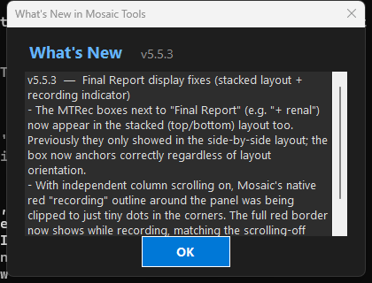

Installation & Updates
A single exe with no installer and no admin rights, which quietly keeps itself up to date — updates stage in the background and apply only when it's safe, with a What's New popup and one-click rollback.


What it does
MosaicTools is one MosaicTools.exe — no installer, no admin rights, no services. Drop it in a folder and run it. It updates itself from GitHub Releases: new versions download as a ZIP (which corporate antivirus tolerates far better than a bare exe download) and install via a rename trick — the running exe is renamed aside, the new one takes its place, and the app restarts into it.
How to turn it on / set it up
Settings → Desktop Mode → Updates:
- Auto-update on startup — check for and install updates when the app launches.
- Check Now — manual check.
- Rollback to Previous Version — pick any earlier release and install it; auto-update is disabled afterwards so it doesn't immediately re-update you.
Using it
Mostly nothing: long-running sessions also check hourly in the background, stage the update silently, and apply it at a dictation lull — never mid-dictation. After an update you get the What's New popup summarizing everything since the version you last saw (skip three updates, see all three sets of notes). The full history is always available via the 🆕 What's New button at the top of Settings.
Tips & gotchas
- Updates come from the public
MosaicTools-distGitHub repo; only outbound HTTPS to github.com is needed. The updater honors your system proxy and authenticates with your Windows credentials, which matters behind authenticating corporate proxies. - An anti-loop guard backs off for a cooldown if an update can't stick (locked exe, AV quarantine) rather than restart-looping.
- Don't run MosaicTools from a folder you can't write to, or from OneDrive-synced paths if you can avoid it — the rename swap needs write access next to the exe.
- Rollback is the escape hatch if a new version misbehaves; report the issue so it's fixed, then re-enable Auto-update on startup.